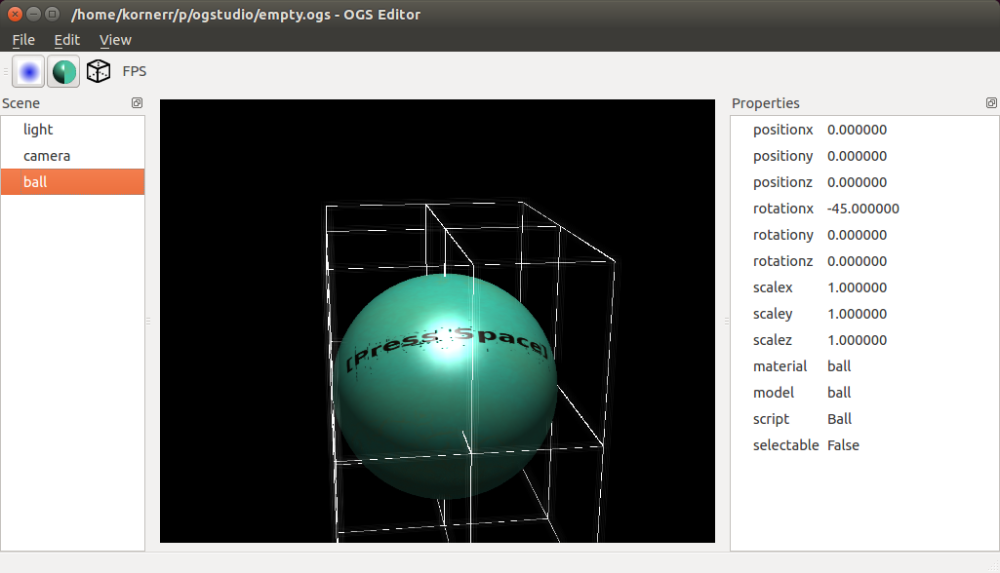

2016-09-03 00:00

Эта статья описывает самые важные технические детали разработки за август: модуль UIQt, его переработку, новый подход к разработке на основе функционала и его преимущества.
Модуль UIQt - это коллекция компонент UI на основе Qt. Сейчас используем лишь для интерфейса редактора.
Список компонент модуля UIQt с описанием и размером кода:
| № | Компонента | Описание | Размер (Б) | Размер (%) |
|---|---|---|---|---|
| 1 | UIQtAction | Действия (события) для меню | 11224 | 9 |
| 2 | UIQtAux | Инициализирует Qt и главное окно. Предоставляет поиск виджета по имени для других компонент | 15518 | 12 |
| 3 | UIQtDock | Виджет стыковки | 5273 | 4 |
| 4 | UIQtFileDialog | Диалог выбора файла | 8960 | 7 |
| 5 | UIQtMenu | Меню для главного окна и на ПКМ (вроде меню по добавлению/копированию/вставке/удалению узла) | 4566 | 3 |
| 6 | UIQtMenuBar | Панель меню для главного окна | 4222 | 3 |
| 7 | UIQtRunner | Позволяет запустить QApplication | 2450 | 2 |
| 8 | UIQtThumbnailDialog | Диалог с изображениями | 18615 | 14 |
| 9 | UIQtToolBar | Панель инструментов для главого окна | 4276 | 3 |
| 10 | UIQtTree | Предоставляет сложные виджеты вроде Дерева сцены и Редактора свойств | 51216 | 39 |
| 11 | UIQtWidget | Общие свойства виджетов вроде фокуса и видимости | 5465 | 4 |
Мы переработали модуль UIQt для замены старого State API на новый Environment API, который позволяет делать то же самое лаконичнее, т.е. упрощает и ускоряет разработку.
Переработку начали в июле и должны были закончить в том же месяце. Тем не менеe, работы завершили лишь в августе. Начальный план предполагал, что 28 часов должно хватить, но мы потратили 65. Мы оценивали необходимое время на основе количества вызовов публичного API каждой компоненты. Это хорошо сработало для небольших компонент, т.к. число вызовов их публичного API было примерно равно количеству их функционала, а сам функционал был очень маленький. Однако такой подход полностью провалился для компонеты UIQtTree, составляющей 39% кода модуля UIQt, потому что не было прямой связи между публичным API и функционалом.
Новый подход к разработке на основе функционала родился после решения проблем с переработкой UIQtTree. Т.к. Qt использует MVC, компонента UIQtTree состоит из нескольких классов. К тому моменту, когда UIQtTree могла отображать и управлять иерархией элементов, компонента уже имела размер в 27К. Мы заметили, что UIQtTree стала потреблять непомерное количество времени разработки даже для мелкого функционала. Это было явным проявлением количественной сложности.
Мы решили разбить UIQtTree на базовую часть и дополнительные. База содержит лишь необходимый минимум кода. Дополнение содержит код, специфичный для данного функционала, и может быть безболезненно изменено. В случае UIQtTree, отображение и управление иерархией элементов - это минимальный функционал, а переименование элементов - это дополнение.
Текущий функционал UIQtTree состоит из следующих возможностей:
| **№** | **Функционал** | **Описание** | **Размер (Б)** | **Размер (%)** |
|---|---|---|---|---|
| 1 | Base | Создание, изменение, отображение иерархии элементов | 26966 | 52 |
| 2 | Item open state | Хранит состояние свойства скрыто/отображено элемента | 3094 | 6 |
| 3 | Item renaming | Переименование элемента | 3471 | 7 |
| 4 | Item selection | Получение/установка выбранного элемента | 2338 | 5 |
| 5 | Item value | Предоставляет второй и последующие столбцы для элементов, используется Редактором свойств | 1307 | 3 |
| 6 | Item value editing | Редактирование значений элемента с помощью стандартного виджета | 1996 | 4 |
| 7 | Item value editing with combobox | Редактирование значений элемента с помощью виджета combobox | 5819 | 11 |
| 8 | Item value editing with spinner | Редактирование значений элемента с помощью виджета spinbox | 5290 | 10 |
| 9 | Menu | Меню на ПКМ | 1248 | 2 |
Пример файла функционала Menu для UIQtTree: TREE_MENU.
Преимущества подхода:
Есть и недостаток: новый подход требует изучения.
На этом мы заканчиваем описание самых важных технических деталей разработки за август: модуль UIQt, его переработку, новый подход к разработке на основе функционала и его преимущества.